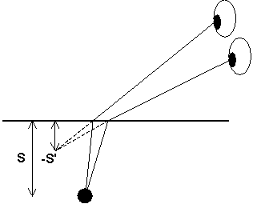

Kap 1 Geometrisk optik
Hur uppkommer en bild?
I all optik pratar vi om objekt och bilder, alltså börjar vi med att göra klart för oss vad vi menar då.
Definition:
Objekt är en samling punkter varifrån ljus sprids i ett vinkelområde.
Kommentar:
Detta innebär att ett objekt antingen kan vara en ljuskälla (lampa, stearinljus e.d.) eller ett föremål som sprider inkommande belysning. Det sistnämnda är vanligast. En tå, en katt och en stridsvagn är bra exempel på objekt, men en spegel är det inte.
Varför?
Definition:
Bild är en punkt där strålar från objektet går ihop (reell bild) eller ser ut att ha gått ihop (virtuell bild)
Kommentar:
Detta blir klarast av ett litet exempel. Tänk Dig en tå 1m under en lugn vattenyta. Strålarna (som från början kommer från solen, vilket vi struntar i nu) från tån sprids då åt alla håll. I figuren härintill har vi ritat ut två av dessa. De
bryts (nivå2) när de kommer till vattenytan. En betraktare ovan vattenytan ( den lilla dottern som kommer och ser att pappa ser kortare ut än vanligt när han står i vattnet) ser de två strålarna som ser ut att komma från en punkt där de streckade linjerna börjar. Betraktarens hjärna/synsinne innehåller ingen liten bildprocessor som känner till brytningslagen, och därför tolkar vi synintrycket som att det vi tittar på ligger i utgångspunkten för de streckade strålarna.Riktningen till bilden avgörs alltså av åt vilket håll vi tittar, medan hjärnan bestämmer avståndet till bilden genom att känna av vinkelställningen mellan ögonen (dvs hur mycket man skelar, när man tittar på ett objekt). Denna information använder sedan hjärnan till att bestämma vilken skärpeinställning (ackomodation) ögat behöver ha. Därutöver har människkroppen reservförfaranden för avståndsinställning om man skulle råka bli enögd, men det bortser vi från nu.
Det vi ser under vattenytan är nu en virtuell bild av tån. Strålarna har aldrig varit i den punkt de ser ut att komma ifrån.
Den andra bildtypen är en reell bild, där strålarna verkligen går ihop i en punkt. Exempel på detta är projektorer av olika slag, där strålarna går ihop på skärmen och kameror där de går ihop (ska gå ihop) på filmen. Sådana bilder uppkommer bara när krökta ytor är inblandade (men det måste inte bli en reell bild om man har en krökt yta).
Vi behöver två definitioner till för att vara nöjda:
Objektsrymd (OR) är den sida om en brytande yta (plan eller krökt) varifrån ljuset kommer.
Vilken sida var objektrymd i tå-under-vatten-exemplet ovan?
Bildrymden (BR) är den sida om ytan vartåt ljuset är på väg.
OBS alltså att det inte är så enkelt att bilden ligger i bildrymden och objektet i objektsrymden!! Tån och bilden av tån ligger ju båda under vatten. Konstigt såge det nog ut annars!!
Till
nästa sida (Avbildning i sfärisk yta)Till
nästa kapitel (Begränsningar i optiska system)Till
innehållsförteckningen